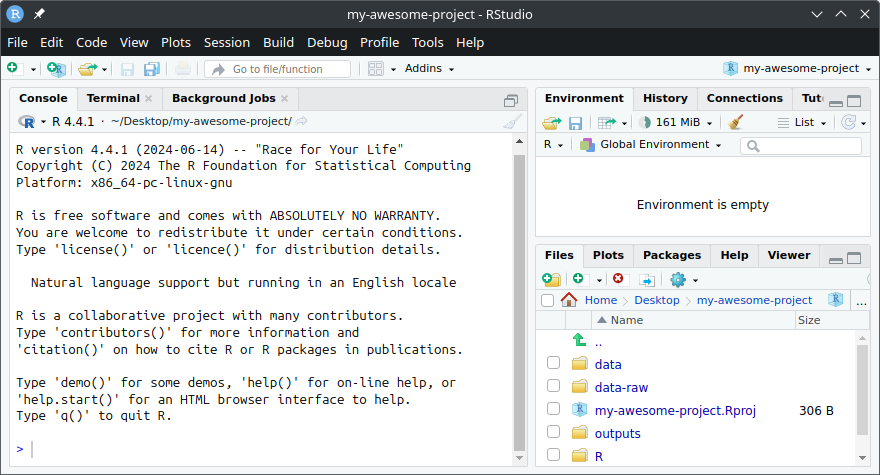
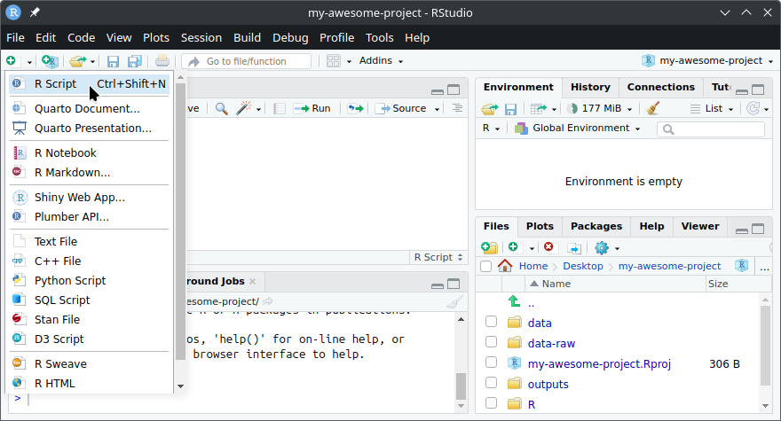
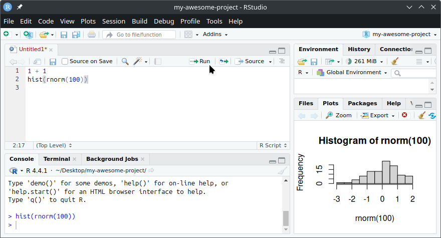
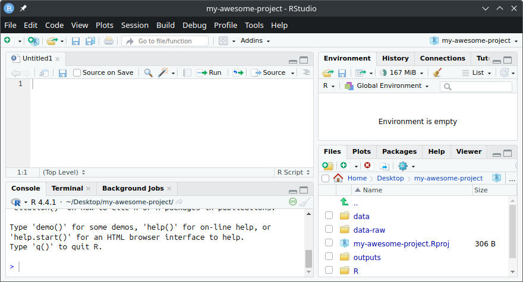
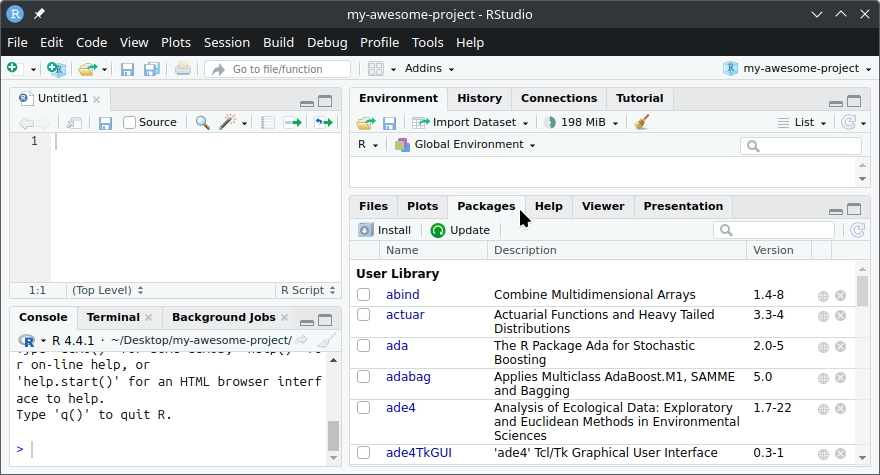
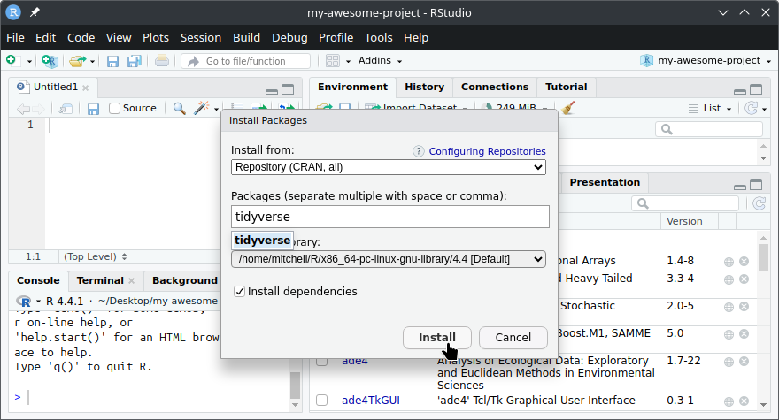
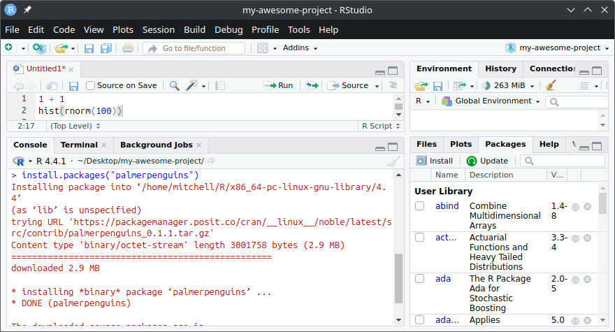

Using RStudio
RStudio is an Integrated Development Environment (IDE) developed by Posit for the R programming language. It is designed for analysing data, and is the most popular coding environment for R. In extension to the usual script editing and console output of other IDEs, RStudio also includes tools for viewing analysis results such as data, plots, and documents.
Start by opening RStudio on your computer, once loaded it should look like this:

In the R Console on the left, you should see information about your R installation. If you see something similar, congratulations – you’ve successfully installed both R and RStudio as outlined in the previous lesson!
You can try out some R code by typing into the R Console, just after the > at the bottom. We’ll get some practice writing R code in the next lesson, but for now you can try:
1 + 1(Make sure that basic math still applies)hist(rnorm(100))(Histogram of 100 random normally distributed numbers)
Any code you write into the R Console is temporary, and will be lost when you restart R or close RStudio. Any code you want to keep should be written into an R script (or an R document, explained in a later lesson).
To create an R script, click on the new document drop-down and select “R Script” (or use the keyboard shortcut Ctrl-Shift-NCtrl-Shift-N):

An R script is a simple text file which you can write and save your R code in. To run code from an R script, click on the line of code you want to run and then click the Run button (or use the keyboard shortcut Ctrl-EnterCtrl-Enter)

The code from your R script is ran in the Console, and the result is displayed.
Running selected code
Instead of running the entire line of code, you can also run specific parts of your code by first highlighting the part you wish to run.
Try highlighting rnorm(100) before clicking the run button (or using the keyboard shortcut Ctrl-EnterCtrl-Enter)
The 4-pane workspace

The RStudio workspace is organised into 4 adjustable panes which serve different purposes:
Source Pane (Top-Left) Write your R code in scripts, documents, and web apps here. Each open file is split across tabs.
Console Pane (Bottom-Left) The Console is where code is ran, and most results are shown. This pane also has tabs for the Terminal (a code interface to your computer), and background jobs (used for running code in the background).
Environment and Tools Pane (Top-Right) The environment is where your R objects exist. Try running
x <- 1:10which will create an object namedxcontaining the numbers 1 to 10. This newly created object should appear in the environment tab.This pane also includes other tabs containing tools specific to your R project (such as document rendering and version control with git). R projects are explained more in a later lesson.
Files, Packages, Help and Outputs Pane (Bottom-Right) This is where most of your visual outputs are shown.
This pane contains tabs for many output types:
- Plots: View generated plots.
- Viewer: View interactive outputs and documents.
- Presentation: View presentation slides.
It also includes useful tools for writing R code, including:
- Files: Explore your files.
- Help: View and search documentation for R functions.
- Packages: Manage installed packages.
Customising your workspace
The appearance and layout of your workspace is fully customisable. You can resize each pane by dragging the gaps between panes.
Further customisation options can be found in the Tools > Global Options, from there you can switch the RStudio colour theme under Appearance and reorganise the pane tabs under Pane Layout.
R packages
R packages extend the functionality of R with new functions and datasets. R packages can be managed from the “Packages” tab of the Output pane. Here you can see the currently installed packages, update them, or install new packages.

To install a new R package, click on the “Install” button to open the “Install Packages” pop-up. Then type the name of the package you want to install (e.g. “tidyverse”) and click “Install” (the dependencies checkbox should also be ticked):

You can use either the “Packages” tab or directly use the install.packages() function to install packages.

Try installing the palmerpenguins package. It provides a dataset about Antarctic penguins that we’ll be using in many examples. Once you complete the installation pop-up, you should see the Console busily working to download and install the package. Above all of the red text, you will find that R is running install.packages("palmerpenguins") to install the package.
To use an installed package, you need to attach it with the library() function. Try loading the palmerpenguins package with library(palmerpenguins). If successful, you will now be able to view the penguins dataset by running the code penguins and view the dataset’s documentation by running ?penguins.
Using packages
R packages only need to be installed once, but they need to be attached every time before you use them.
Load all of the packages you use at the start of each R script with library().
Exclude (or comment out) install.packages() from your scripts to prevent re-installing packages each time you run your code.
Try installing and attaching the palmerpenguins package using only code here: